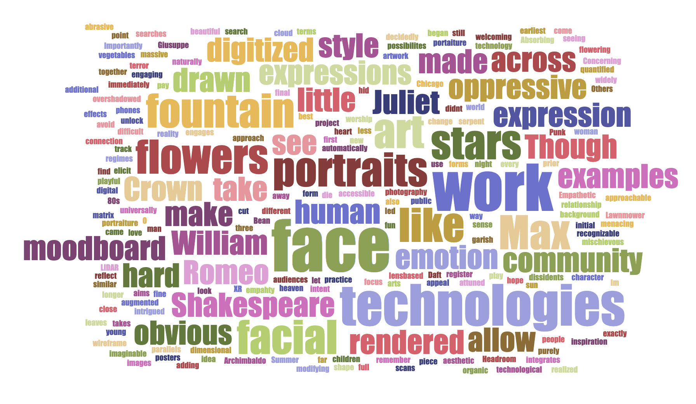

Little Stars
A project proposal for Gray Area Immersive, 2019
When he shall die,
Take him and cut him out in little stars,
And he will make the face of heaven so fine
That all the world will be in love with night
And pay no worship to the garish sun.
― William Shakespeare, Romeo and Juliet
O serpent heart, hid with a flowering face!
― William Shakespeare, Romeo and Juliet
The Audience:
With a focus facial expression and human emotion, the project aims to be universally accessible.
In practice, the work has obvious appeal for the XR community, and those intrigued by the possibilites technology in the arts. As a new approach to portraiture, it also engages audiences drawn to photography and lens-based art.
Three Descriptive Words:
Empathetic:
We automatically register emotion and intent through facial expression; we're attuned to each other this way. As a form of portaiture in augmented reality, the work should elicit a sense of empahty.
Absorbing:
As the three dimensional forms change to reflect different people and expressions, it will be difficult to look away – we're naturally drawn to faces.
Concerning:
The technologies that allow for an art piece like this, are the same technologies we use to unlock our phones, and the same technologies that allow oppressive regimes to track dissidents. Our relationship with faces and facial expressions is no longer purely human – it has been digitized and quantified.
Inspirational Works:
The Crown Fountain, Chicago
There are obvious parallels here, but I didn’t immediately make the connection. Though overshadowed by “The Bean” the fountain takes faces from the community and integrates them into a beautiful and engaging public artwork.

In Summer, children of every imaginable background play together there. A massive, digitized face could be oppressive and menacing, but the Crown fountain is decidedly welcoming.
Max Headroom
While I hope to avoid the 80’s aesthetic, Max was the first widely recognizable digital character. Importantly, he was fun and playful – mischievous.

Though realized with the similar technologies, Max was far more approachable than the hard, wireframe portraits of Daft Punk or the terror of Lawnmower Man.
Giusuppe Archimbaldo
I remember seeing posters of his work when I was young – the man made of vegetables, the woman of flowers. I came across his work again as the idea of a point cloud rendered in stars or flowers began to take shape.
Others have made portraits like these (see moodboard), but his work is the earliest – and best – prior art I can find. While not exactly in this style, it's close to how I see the final portraits rendered.
Create a Moodboard:
My initial searches let to hard, technological images – LIDAR scans and matrix style effects. But modifying that search with organic terms like "leaves" and "flowers" led to less abrasive examples. I'm still adding to the full moodboard as I come across additional examples and inspiration.

Create a Tag Cloud:
I knew “face” would loom large, but I was surprised to see “technologies” and “oppressive” emerge. This gets at the tension I hope the finished work evokes. Something beautiful, human and engaging, but tinged by the uncertain future of our identity.



{kind=link}
{kind=link}
{kind=link}
{kind=link}
{kind=link}
{kind=link}
{kind=link}
{kind=link}
{kind=link}
{kind=link}
{kind=link}
{kind=link}